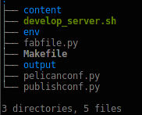
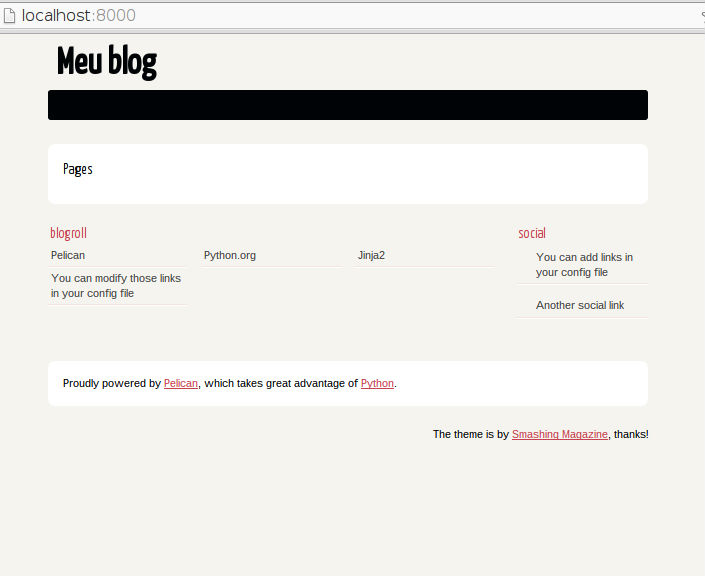
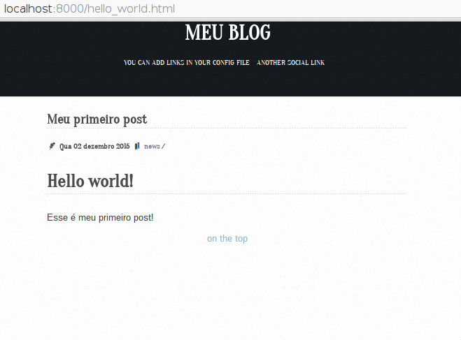

Para estreiar o blog, por que não começar mostrando como ele foi criado?! :]
Assim mais informações podem ser facilmente compartilhadas.
Objetivo
Com essa série de dois posts, iremos criar um blog utilizando o Pelican, hospedá-lo no Github Pages e usar o Travis para automatizar o deploy.
Essa primeira parte será apenas a criação e configuração do blog. Na segunda, será a integração com o Travis e o deploy online.
O que é Pelican?
É um gerador de site estático escrito em Python, que não utiliza banco de dados nem código server-side. (mais sobre ele aqui)
Todo o conteúdo é escrito em Markdown ou reStructuredText e convertido para HTML pelo Pelican.
OBS1: Irei utilizar o Markdown nesse exemplo.
Ferramentas necessárias
- Git
- Python 2.7
- easy_install (para instalar o pip)
- pip
- virtualenv
- Conta no github (é claro :] )
Criando o repositório
Para criarmos o blog, iremos utilizar o GithubPages, que nos da a possibilidade de hospedar um site estático usando o Github. Mas para que funcione, é preciso criar um repositório da seguinte forma: githubUsername.github.io.
Não sabe criar um repositório? Clique aqui.
Meu username é delete, logo: delete.github.io
Clonando o repositório
Depois de criado, agora é hora de clonar o repositório.
$ git clone git@github.com:githubUsername/githubUsername.github.io.git
$ cd githubUsername.github.io.git
Troque o githubUsername pelo seu username!
Criando branch para os arquivos do Pelican
Depois de clonado o repositório, o git irá criar o branch master como padrão.
Aqui tem um truque: o Github pôe online só os arquivo que estão no master, mas iremos criar vários arquivos de configurações e scripts, então iremos separar em dois branches: master - Para arquivos HTML que o Pelican gera; pelican - Todos os outros arquivos(configurações, scripts, etc).
$ git checkout -b pelican
Agora que o branch pelican está criado, iremos sempre trabalhar nele! Quem vai cuidar do branch master será o Travis, que iremos ver adiante.
Ferramentas necessárias
Com o repositório já criado, vamos começar a instalar as aplicações que serão instalas na sua maquina:
$ sudo apt-get install python-setuptools
$ sudo easy_install pip
$ sudo pip install virtualenv
Configurando ambiente de desenvolvimento
Iremos usar o virtualenv para criar um ambiente de desenvolvimento virtual(isolado da maquina principal), onde iremos instalar as bibliotecas necessárias para nosso projeto.
$ virtualenv -p python2.7 env
Com a flag "-p" podemos escolher com qual versão do Python iremos trabalhar. No nosso caso, o Python 2.7. "env" é o diretório do nosso ambiente virtual.
Instalação
Agora sim podemos instalar o Pelican e algumas dependências.
$ sudo pip install pelican markdown ghp-import shovel
Com o Pelican instalado, podemos usar o pelican-quickstart para criar alguns arquivos iniciais de configuração.
$ pelican-quickstart
O comando quickstart irá fazer várias perguntas, como:
O que está em negrito é a resposta dada. Escolha o que for melhor para você!
- Where do you want to create your new web site? [.] aperte ENTER aqui
- What will be the title of this web site? Meu blog
- Who will be the author of this web site? Meu nome
- What will be the default language of this web site? [en] pt
- Do you want to specify a URL prefix? e.g., http://example.com (Y/n) Y
- What is your URL prefix? (see above example; no trailing slash) https://githubUsername.github.io
- Do you want to enable article pagination? (Y/n) Y
- How many articles per page do you want? [10] 10
- What is your time zone? [Europe/Paris] America/Sao_Paulo
- Do you want to generate a Fabfile/Makefile to automate generation and publishing? (Y/n) Y
- Do you want an auto-reload & simpleHTTP script to assist with theme and site development? (Y/n) Y
- Do you want to upload your website using FTP? (y/N) N
- Do you want to upload your website using SSH? (y/N) N
- Do you want to upload your website using Dropbox? (y/N) N
- Do you want to upload your website using S3? (y/N) N
- Do you want to upload your website using Rackspace Cloud Files? (y/N) N
- Do you want to upload your website using GitHub Pages? (y/N) Y
- Is this your personal page (username.github.io)? (y/N) Y Done. Your new project is available at...
Em seguida teremos os seguintes arquivos/diretórios:

Primeiro teste
Para testar localmente, usamos o script develop_server.sh, que cria um servidor HTTP na porta 8000.
$ ./develop_server.sh start
Para parar o servidor:
$ ./develop_server.sh stop
Acesse pelo navegador o endereço e...
http://localhost:8000/
Tchâram! Habemus um blog!

Configurando o Pelican
Foi criado o arquivo pelicanconf.py com o seguinte conteúdo:
#!/usr/bin/env python
# -*- coding: utf-8 -*- #
from __future__ import unicode_literals
AUTHOR = u'Meu nome'
SITENAME = u'Meu blog'
SITEURL = ''
PATH = 'content'
TIMEZONE = 'America/Sao_Paulo'
DEFAULT_LANG = u'pt'
# Feed generation is usually not desired when developing
FEED_ALL_ATOM = None
CATEGORY_FEED_ATOM = None
TRANSLATION_FEED_ATOM = None
AUTHOR_FEED_ATOM = None
AUTHOR_FEED_RSS = None
# Blogroll
LINKS = (('Pelican', 'http://getpelican.com/'),
('Python.org', 'http://python.org/'),
('Jinja2', 'http://jinja.pocoo.org/'),
('You can modify those links in your config file', '#'),)
# Social widget
SOCIAL = (('You can add links in your config file', '#'),
('Another social link', '#'),)
DEFAULT_PAGINATION = 10
# Uncomment following line if you want document-relative URLs when developing
#RELATIVE_URLS = True
É nesse arquivo que você personaliza as configurações do Pelican, por exemplo:
SOCIAL = (('twiiter', 'https://twitter.com/pinheirofellipe'),
('github', 'https://github.com/delete'),)
Para mais exemplo, olhe meu arquivo de configuração aqui.
Olhe a documentação do tema escolhido, pois haverá dicas de como usar as variáveis.
Mudando o tema
No repositório pelican-themes existem N temas disponiveis, só escolher um que lhe agrada e clonar para seu projeto.
Exemplo: Gostei do tema storm, então faço:
$ git clone https://github.com/redVi/storm.git theme
Clone o repositório com o nome de "theme" como no comando acima, pois irá facilitar sua vida.
Ativando o novo tema
Adicione a seguinte linha no arquivo pelicanconf.py
THEME = 'theme'
Primeiro post
O que é um blog sem post? Nada, né? Então vamos criar nossa primeira postagem!
Crie o arquivo hello_world.md dentro do diretório content.
$ touch hello_world.md
Agora adicione as seguintes linhas:
title: Meu primeiro post
date: 2015-12-2 20:20
tags: news
slug: hello_world
author: Meu nome
email: meu@email.com
summary: Meu primeiro post Hello World
# Hello world!
Esse é meu primeiro post!
Agora precisamos converter o arquivo Markdown em HTML com o comando:
$ pelican content -s pelicanconf.py
> Done: Processed 1 article, 0 drafts, 0 pages and 0 hidden pages in 0.17 seconds.
Vamos ver como ficou?
$ ./develop_server.sh start

Pronto, temos um blog funcionando!!
Outras configurações
Adicionando arquivos para serem ignorados
Alguns arquivos .pyc, .pid entre outros, são gerados e não há vantagem de manda-los para nosso repositório no Github. Então iremos adiciona-los ao gitignore.
Crie o arquivo
$ touch .gitignore
E adicione as seguintes linhas:
# Python
__pycache__/
*.py[cod]
# pelican
output/
*.pid
# Cache files
cache/*
# Virtualenv
env/
Adicionando repositórios remotos para atualização automática
Quando tivermos trabalhando com o Travis, teremos uma opção de atualizar repositórios externos, como o nosso repositório de tema. Mas para isso, iremos precisar configurar o arquivo .gitmodules.
Vamos fazer isso de uma vez.
Crie o arquivo
$ touch .gitmodules
E adicione as seguintes linhas:
[submodule "storm"]
path = theme
url = https://github.com/redVi/storm
branch = master
Troque o nome e a url pelo do tema escolhido!
Primeiro commit
Com as configurações básicas do Pelican e do Github feitas, já podemos fazer nosso primeiro commit e enviar nossos arquivos para o Github para salvar as alterações.
$ git add .
$ git commit -m "Primeiro commit"
$ git push origin pelican
Conclusão
Até aqui já temos nosso blog, mas ainda não está online, isso ficará para a segunda parte desse tutorial, onde iremos integrar ao Travis, para automatizar nosso deploy para o Github Pages.